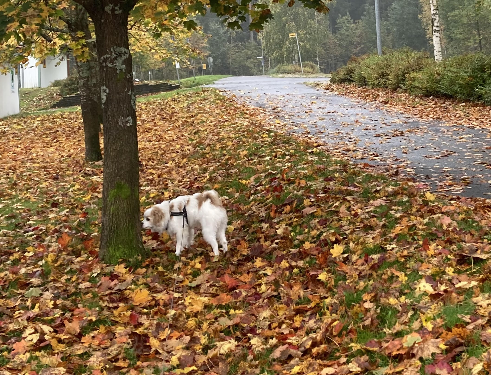

Eeva Heikkilä
Harrastukset
Harrastuksiini kuuluu muun muassa käsityöt, ulkoilu, opiskelu ja taide. Lisäksi pidän ruoanlaitosta ja leipomisesta.
Piirtäminen
Olen piirtänyt esimerkiksi suunnitelmia tatuoinneista. Kuvitan koulutehtäviä ja teen muistiinpanoja piirtäen. Teen myös omia töitä, kuten maalauksia ja piirrustuksia. Yksi isoimmista omista töistäni oli animoidun musiikkivideon luonnoksien piirtäminen käsin.
Ulkoilu
Minulla on nuori ja energinen koira nimeltä Kamu. Käymme koiran kanssa usein metsässä patikoimassa.

Kuva: Eeva Heikkilä